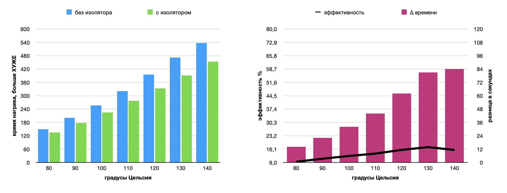
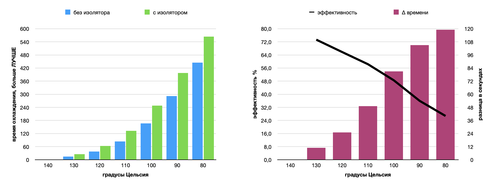

Programming, robotics, traveling
Всегда когда ставишь что-то на печать сильно раздражает ждать пока нагреется стол. Чтобы как-то исправить ситуацию я решил попробовать поставить утеплитель для стола.
Утеплитель (изолятор) – это такая наклейка состоящая из клейкой поверхности, термостойкого вспененного материала (аля поролон) и алюминиевой фольги с внешней стороны. Утеплитель легко ищется на алиэкспрессе, а его стоимость порядка 100 рублей.
Помимо ожидаемого ускорения в нагрвеве стола, мне было интересно провести тесты и понять на сколько реально это полезная вещь. Забегая вперед оказалось, что основная польза утеплителя не в скорости нагрева, а скорее наоборот – в скорости охлаждения, что напрямую снижает расход электроэнергии, тк обычно стол поддерживает температуру в течении длительного времени.
Я полагаю, что когда-то утеплитель был установлен на мой принтер, однако предыдущий владелец его удалил. Из-за этого на нагревающем коврике оранжевого цвета хорошо видны остатки бывшего утеплителя черного цвета.
Установка утеплителя:
При проведении тестов вплоть до 50 градусов время нагрева стола без изолятора было чуть меньше, чем с изолятором, что не логично. У меня приходит пару идей по которым это могло произойти:
Для того, чтобы избавиться от этой ошибки, а также от того, что первоначальная температура стола была разной (22°C – без изолятора и 24°C – с изолятором) возьмем за стартовую температуру значение в 50°C. До этой температуры стол в обоих тестах нагревался за 40 секунд.
Я нагревал стол до 140°C, тк не вижу необходимости нагревать его ещё больше, а также потому, что для этого мне пришлось бы пересобирать прошивку и перепрошивать контроллер принтера.
| t, °C | без изолятора, с | с изолятором, с | ∆ времени, с | эффективность, % |
|---|---|---|---|---|
| 50 | 40 | 40 | 0 | - |
| 60 | 68 | 65 | 3 | 4.4 |
| 70 | 105 | 97 | 8 | 7.6 |
| 80 | 149 | 135 | 14 | 9.4 |
| 90 | 200 | 178 | 22 | 11 |
| 100 | 257 | 225 | 32 | 12.5 |
| 110 | 321 | 277 | 44 | 13.7 |
| 120 | 395 | 333 | 62 | 15.7 |
| 130 | 472 | 391 | 81 | 17.2 |
| 140 | 537 | 453 | 84 | 15.6 |
Тк при тесте охлаждения, я рассматривал температуру до 80°C, для схожести графиков я ограничу значения температуры с 80 до 140 градусов.

Как видно из графика выигрыш во времени при нагреве до 80°C всего 14 секунд, при 100°C доходит до 32 секунд. А средняя эффективность на участке от 80 до 140 градусов составляет 13.6%, что немного. Из чего можно сделать вывод, что ставить утеплитель с целью сократить время первоначального нагрева стола, если и стоит от температур в 90°C.
Максимальное потребление принтера при нагреве стола (без экструдера) вплоть до 130 градусов составляет 260Вт. Затем как видно из графика включается ПИД регулятор и снижает потребляемую мощность.
| t, °C | без изолятора, с | с изолятором, с | ∆ времени, с | эффективность, % |
|---|---|---|---|---|
| 140 | 0 | 0 | 0 | - |
| 130 | 15 | 26 | 11 | 73.3 |
| 120 | 38 | 63 | 25 | 65.8 |
| 110 | 84 | 133 | 49 | 58.3 |
| 100 | 167 | 248 | 81 | 48.5 |
| 90 | 292 | 397 | 105 | 36 |
| 80 | 445 | 564 | 119 | 26.7 |
После анализа полученных графиков, я допустил изменение значения с 80 до 84 при 110°C для измерения без изолятора. На графике это особенно бросалось в глаза, тк был острый выпирающий пик на линии эффективности. Полагаю, что произошла ошибка при проведении теста. Это также потвердила проведенная апроксимая по скриншоту из Octoprint.

Как видно из графика наибольшая эффективность в самом начале в районе высокой температуры: охлаждение со 140°C до 130°C происходило на 73% медленнее чем, без утеплителя. При снижении температуры вплоть до 80°C эффективность снижается до 27%, однако и это неплохой показатель (учитываю абсолютную разницу в 14 секунд при охлаждении с 90°C до 80°C). Это очень интересный момент, тк большую часть времени принтер поддерживает температуру стола, а то, что он медленнее охлаждается, то есть отдает тепло в среду, означает, что потребуется меньше энергии на поддержание заданной температуры. К сожалению я не задумался о проведении такого теста до наклейки коврика. Так что тут можно только предполагать. Однако средняя потребляемая мощность принтера при поддержании температуры в 140°C – 170Вт.
Впервые делаю подобного рода (наполненную статистической информацией) статью, уверен, что мог допустить ошибки, поэтому если заметили – буду рад конструктивной критике.
Спасибо, что дочитали.